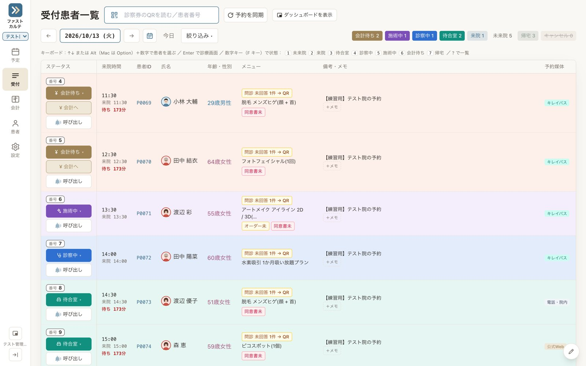
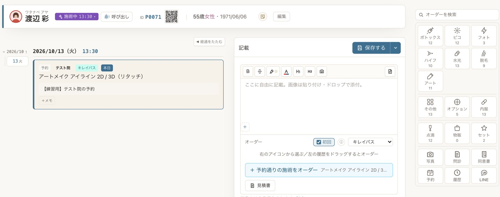
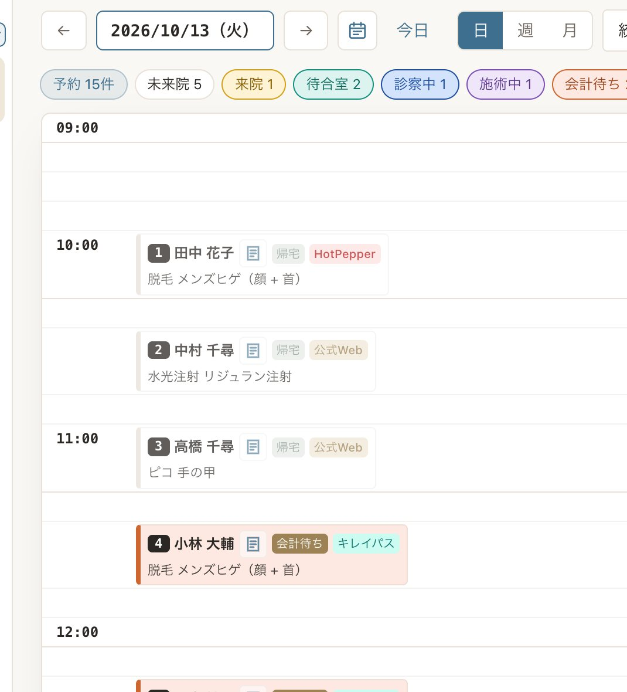
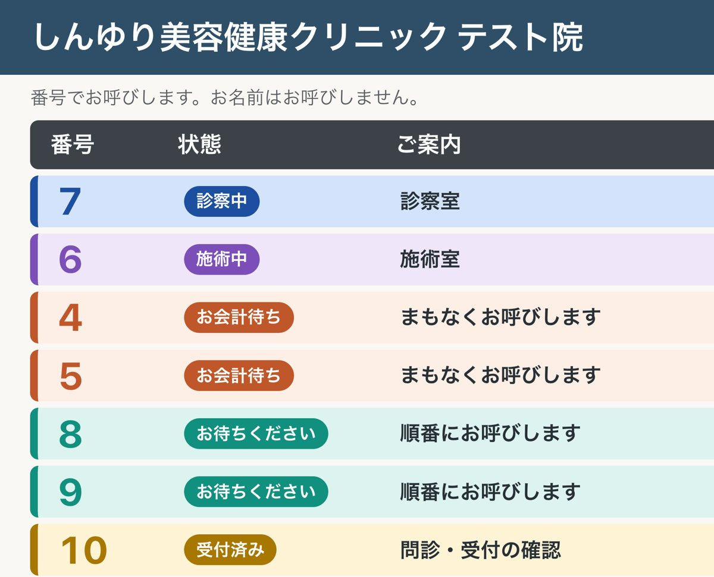
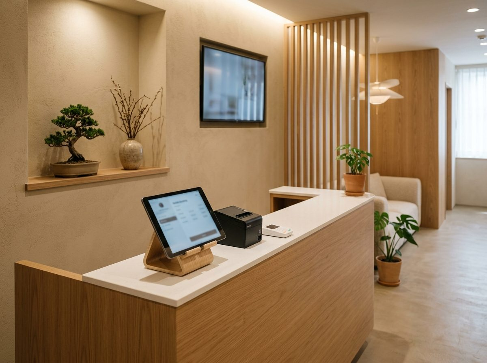
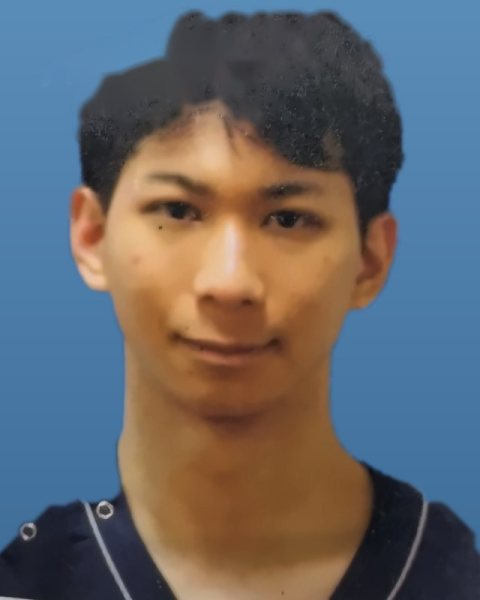

どれも、実際の院で困ったことがきっかけで入れた機能です。
ホットペッパーで入った予約を、キレイパスの枠でも閉じ忘れる。
3つの予約サイトの予約を自動で取り込み、埋まった枠はほかのサイトでも閉じます。院のHPからの24時間Web予約も、同じ台帳に入ります。
呼ばれても聞こえない、自分の番が分からない。
番号札に本人の診察券QRを印字。待合のモニターと音声で番号と部屋を案内し、スマホにも呼び出しが届きます。
「脱毛」を探すのに漢字変換で手が止まる。
「だつもう」と打てば脱毛のテンプレートが出ます。部位などはタップで選べるので、入力の手間が減ります。
高額なコースの説明で、紙の書類が何枚も行き来する。
タブレットで電子署名。見積書は組み合わせを3通り並べて提示し、特商法の書面やクーリングオフの期限も自動で出します。
新人がいきなり本番で操作するのは不安。
毎日15人の架空の患者が来る練習用の院を用意。矢印に沿って受付から会計まで練習でき、記録は7日で自動で消えます。
iPadのアプリから印刷ボタンを押しても反応しない。
その場でPDFにして共有シートを開く方式に。予定表・領収書・同意書の控えを、受付のiPadから直接印刷できます。

しんゆり美容健康クリニック 本院・府中院
本院：東京都稲城市 府中院：東京都府中市（2026年11月開院）
開発者の鈴木が院長を務める院です
府中院は開院準備の段階から導入し、予約・受付・番号札・呼び出し・カルテ・会計までをファストカルテで行っています。本院でも、予約台帳・電子同意書・Web問診・診察券を毎日の診療で使っています。受付のキー操作や待合の読み上げは、開院準備のなかでスタッフの声を聞いて加えたものです。
カルテを入れ替えなくても導入できます。いまお使いの電子カルテや予約システムはそのままで、必要な仕組みだけを追加することもご相談ください。
番号札の印刷、受付からの呼び出し、待合のモニターと音声の案内、患者のスマホへの通知。患者さんの名前を呼ばずにご案内できます。
9,800円/月から
導入費 29,800円から
ホットペッパー・キレイパス・トリビューの予約を1つの台帳に集め、空き状況を自動で合わせます。
19,800円/月から
導入費 29,800円から
タブレットでの署名と、来院前のスマホ問診。紙のスキャンや転記が要らなくなります。
9,800円/月から
導入費 29,800円から
ダッシュボード、院名入りの診察券アプリ、他のシステムとのつなぎ込みなど。
お見積もり
表示は1院あたり・税抜の目安です。いまのシステムとのつなぎ方（予約データの取り込み、受付での入力など）は、院の環境を見てご提案し、導入費もつなぎ方に合わせてお見積もりします。
ClaudeなどのAIアシスタントから、院が許可した範囲でカルテの集計や予約の確認ができる接続口（MCP：AIとソフトをつなぐ共通の仕組み）を、他院向けの版に組み込んでいます。初めはすべてオフで、使う人と範囲は院長が決めます。患者の氏名は伏せて渡し、予約の取り消しなどはスタッフが画面で承認してから実行します。会計やカルテの記載、新しい患者の登録はAIからはできません。提供の開始時期は、ご相談のときにご案内します。
院の公式アプリ・Web診察券向けの患者API、LINE公式アカウントとの連携、売上のCSV出力を備えています。いまお使いのシステムや会計ソフトとのつなぎ込みは、ご相談ください。
保険診療への対応もご相談くださいいまは美容・自由診療の院向けが中心です。保険診療をしている院も、診療の内容をうかがって対応できる範囲をご説明します。
カルテには、顔写真や施術の記録など、外に出てはならない情報が集まります。自院で毎日使うカルテだからこそ、守りの仕組みも現場の運用に合わせて組み込んでいます。
厚生労働省「医療情報システムの安全管理に関するガイドライン」に沿って、安全管理の説明資料を整えています。ご検討の際は、いまの対応状況をそのままお見せします。
カルテのデータは国内（東京）のデータセンターに置きます。端末とのやりとりは、すべて暗号化した通信（HTTPS）です。
医師・看護師・受付など、職種や業務ごとに見られる範囲と操作を分けます。退職したスタッフのアカウントは、その場で止められます。
英字と数字を混ぜたパスワード、続けて5回まちがえると一定時間ロック、操作がないと自動でログアウト。認証アプリによる二段階認証も、院の方針で全員・院外からだけなどを選べます。
院の端末を登録して使います。院の外から使うときは、申請と許可が必要です。
カルテを直す前の内容は履歴として残り、誰がいつ何をしたかの操作記録も、あとから書き換えられない形で保存します。患者さんを一覧から外しても、診療の記録は残ります。
施術写真や署名した同意書は、ログインしたスタッフだけが見られる場所に保管します。待合の呼び出し音声には、患者さんの名前を使いません。
決まった形に院を合わせるのではなく、カルテのほうを院に合わせます。受付や看護師、カウンセラーが「ここが使いにくい」と感じたところを、開発者の私が直接聞いて、画面や流れを作り変えます。
メーカーの窓口に要望を出して、何か月も待つ必要はありません。府中院の開院準備でも、スタッフの声を聞いたその週のうちに、受付のキー操作や呼び出しの読み上げを変えました。
定期的に院のスタッフと話し、困りごとを集めます。
画面の並び、入力欄、帳票、受付の流れなど。ほかの院向けの汎用機能にはしない調整も行います。
入れ替え作業や追加の導入費は不要です。
代表の私が院に勤務し、現場で責任を持って、その院に合ったカルテを作ることもできます。ご相談ください。
表示は1院あたり・税抜。いまのカルテのまま一部だけを導入する場合は、部分導入の料金をご覧ください。システムの顧問や、代表の医師が院に勤務して現場でカルテを作る形も、個別にご相談ください。

鈴木 雄哉すずき ゆうや
医師合同会社鈴木医工 代表社員しんゆり美容健康クリニック 院長
ファストカルテは、院長として受付や診察室に立つなかで、自分で作ってきた電子カルテです。導入のご相談にも、私が直接うかがいます。ご希望があれば、院に勤務して、現場で責任を持ってその院に合ったカルテを作ります。
いまは美容・自由診療の院向けが中心ですが、保険診療への対応もご相談ください。院の診療の内容をうかがって、対応できる範囲をご説明します。
できます。代表の医師が院に勤務し、現場で責任を持って、その院に合ったカルテを作ることもできます。勤務の日数や内容は、ご相談のうえで決めます。
患者情報・予約・来院履歴は移せます。データ移行は50,000円からで、元のデータの形式を見て見積もります。
メニューと料金の登録、同意書・問診の取り込み、端末の設定、スタッフへの操作説明です。使い始めの1週間に出たご要望に合わせたカスタマイズも、無料で含まれます。
できます。いまのカルテや予約システムはそのままに、番号札・呼び出し・待合モニターだけを導入する方法をご提案します。つなぎ方は院の環境を見て決めます。
院の公式アプリ・Web診察券向けの患者API、LINE公式アカウントとの連携、売上のCSV出力を備えています。ClaudeなどのAIアシスタントからカルテを使える接続口（MCP）は準備中で、院が許可した範囲だけで動く仕組みにしています。いまお使いのシステムとのつなぎ込みは、ご相談ください。
国内（東京）のクラウドに保存します。バックアップの取り方と保存先は、導入時に院ごとに設定します。
カルテごと入れ替える場合も、番号札だけ入れたい場合も、いまの受付の流れに合うかどうかを一緒に確認します。
メールでのご相談も受け付けています：info@suzuki-medical-engineering.work